Introducción
En esta actividad realizamos la preparación inicial del entorno de trabajo para el despliegue de servicios y aplicaciones de red.
Se prepararon dispositivos USB booteables, se instaló Ubuntu Server 24.04 en el Dell Wyse y se configuraron las herramientas necesarias para las siguientes prácticas.
Creación de USB booteable Windows 11
Se utilizó la herramienta oficial MediaCreationTool para generar un pendrive booteable de Windows 11.
Durante el proceso se seleccionó:
- Idioma del sistema
- Versión Windows 11
- Unidad USB de destino
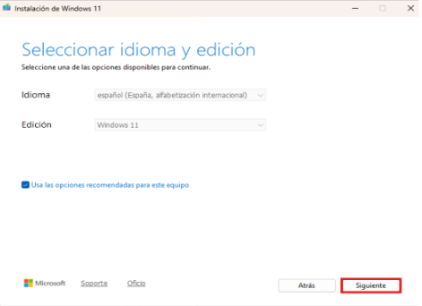
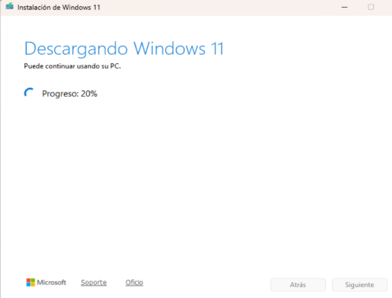
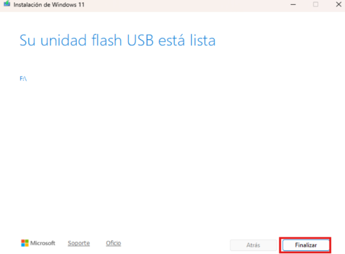
Creación de USB Ubuntu Server
Posteriormente se descargó la ISO oficial de Ubuntu Server 24.04 y se utilizó Rufus para generar el USB booteable.
Se configuró:
- Esquema GPT
- Modo UEFI
- Sistema de archivos FAT32
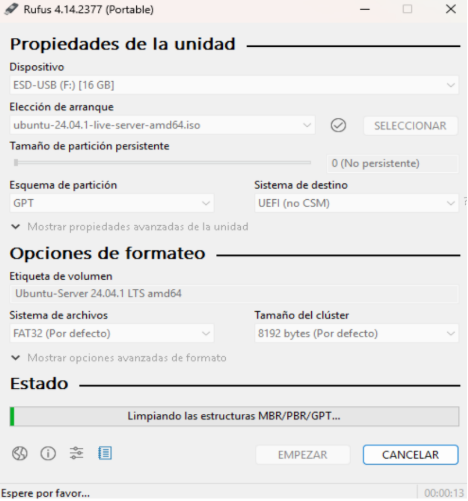
Configuración de BIOS
Para iniciar la instalación fue necesario acceder a la BIOS del Dell Wyse y modificar el orden de arranque.
Se configuró el modo UEFI y se seleccionó el pendrive USB como dispositivo principal. Una vez iniciado con el pendrive, se abría el instalador.
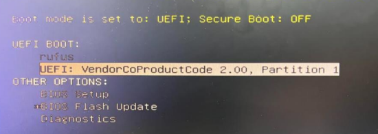
Instalación de Ubuntu Server 24.04
Una vez iniciado el sistema desde USB, se realizó la instalación de Ubuntu Server.
Durante el proceso se configuró:
- Idioma del sistema
- Distribución del teclado
- Usuario administrador
- Nombre del servidor
- Configuración de red
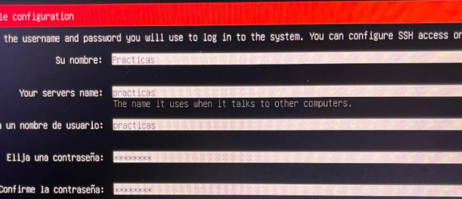
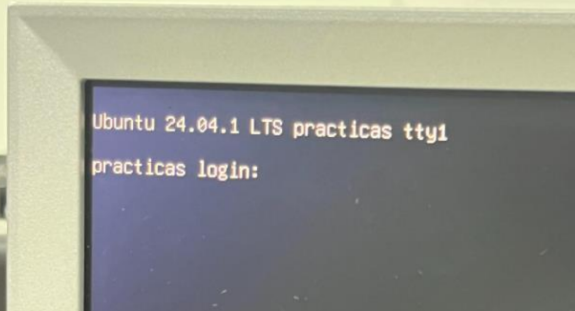
Configuración inicial del sistema
Después de instalar Ubuntu Server se realizaron las primeras comprobaciones y actualizaciones del sistema operativo.
sudo apt update && sudo apt upgrade -y
También se verificó la conectividad de red y el acceso mediante terminal.
Instalación de OCS Inventory NG Agent
Para permitir la monitorización y auditoría del equipo cliente, se instaló OCS Inventory NG Agent para Windows.
Primero se accedió al portal oficial de descargas de OCS Inventory y se descargó el agente para Windows x64.
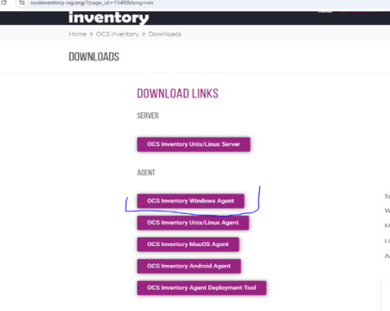
Tras descomprimir el archivo ZIP, se ejecutó el instalador OCS-Windows-Agent-Setup-x64.exe.
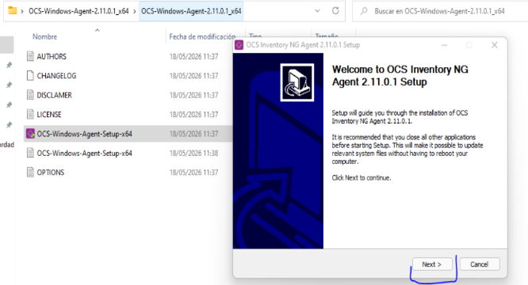
Durante la instalación se aceptó la licencia GNU GPL v2 y se validaron los componentes necesarios:
- Working data folder
- Upgrade from 1.X Agent
- OCS Inventory Agent
- Network inventory
- Uninstaller
Posteriormente se configuró la URL del servidor
También se introdujo el usuario PRACTICAS y su contraseña correspondiente para permitir la comunicación con el servidor.
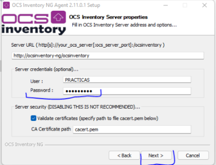
Finalmente se configuró la etiqueta TAG PRACTICAS y se completó la instalación.
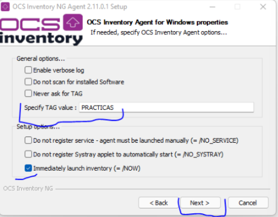
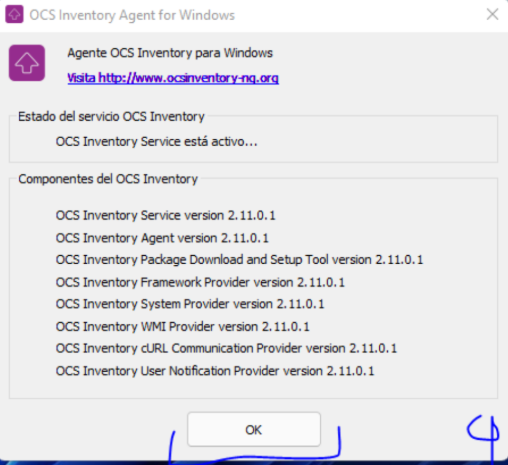
Instalación de Cisco Packet Tracer
Después se instaló Cisco Packet Tracer 9.0.0, herramienta utilizada para el diseño y simulación de redes.
El instalador fue descargado desde la plataforma oficial de Cisco.
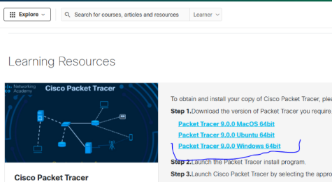
Durante el asistente de instalación se validó la ruta de instalación:
C:\Program Files\Cisco Packet Tracer 9.0.0
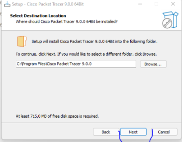
Una vez seguido el instalador, el último paso es darle al botçon de instalar y acabar.
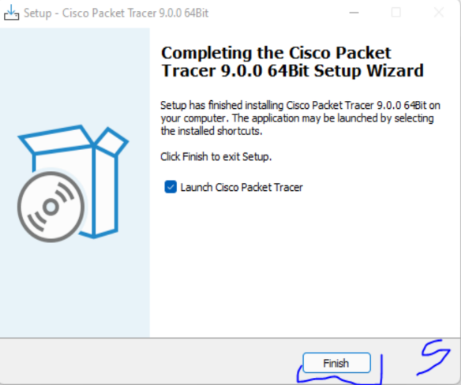
Finalmente se ejecutó Packet Tracer para comprobar el correcto funcionamiento del programa.
Instalación de Visual Studio Code
Posteriormente se instaló Visual Studio Code, editor de código utilizado para el desarrollo de scripts y páginas web del proyecto.
El instalador oficial fue descargado desde la web de Microsoft Visual Studio.
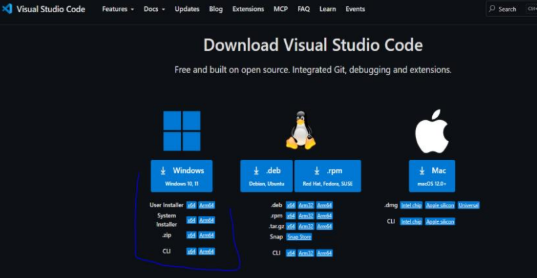
Durante la instalación se fue aceptando y siguiendo las instrucciones básicas

Finalmente se dio al botón instalar, una vez configurado todo.
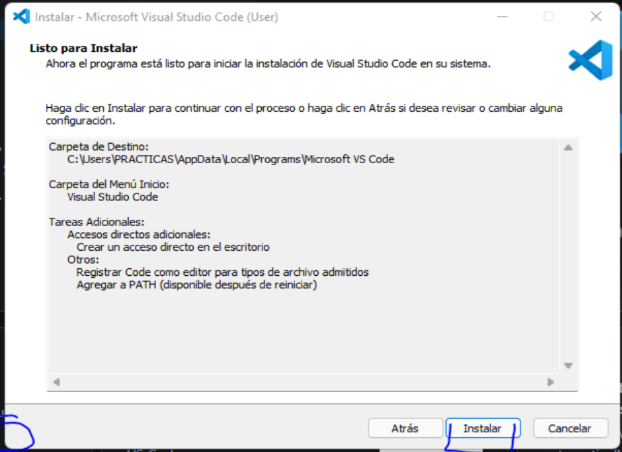
Comprobación final del entorno
Como verificación final de la actividad, se revisó visualmente el escritorio Windows para confirmar la correcta instalación de todas las herramientas necesarias.
Se comprobó la presencia de:
- OCS Inventory Agent
- Cisco Packet Tracer
- Visual Studio Code
Con esta comprobación, el entorno de trabajo quedó totalmente preparado para continuar con las siguientes actividades.
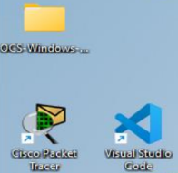